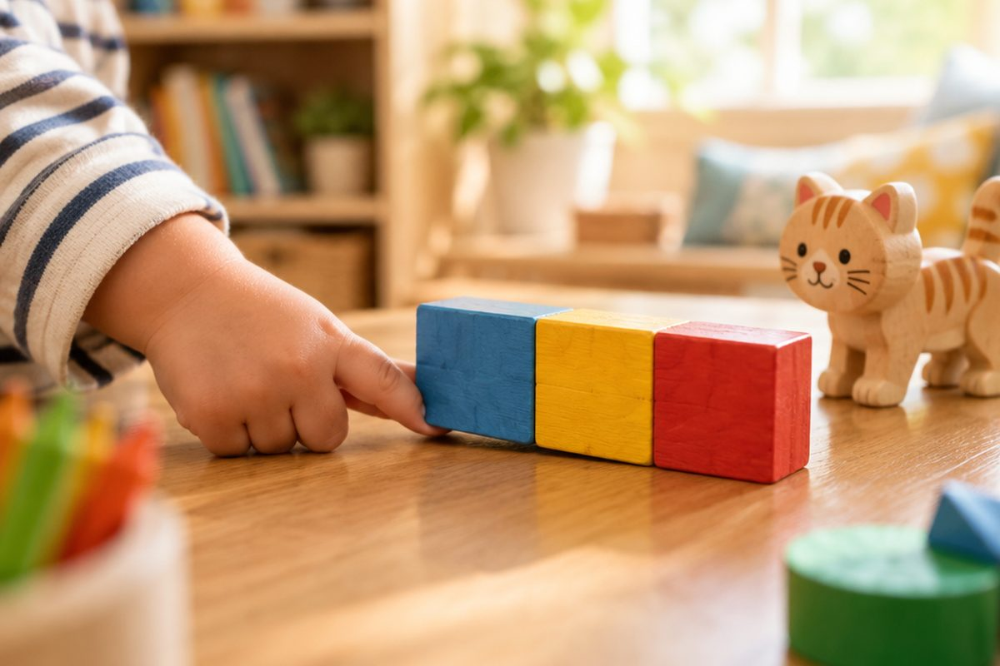

전체 단원 › 1학년 › 영어 › 2단계 · 짧은 모음 낱말 (cat, dog)
c-a-t, 소리를 이으면 어떤 낱말이 될까?

글자 소리를 알면 낱말을 읽을 수 있어요. 소리를 이어서 cat을 읽어 봐요.
소리를 이어 읽어요
글자 소리를 하나씩 내요.
c, a, t → '크, 애, 트'.
빨리 이으면 cat!
c + a + t = cat · d + o + g = dog
가운데 모음이 중요해요
a e i o u 는 모음이에요.
세 글자 낱말 가운데에 자주 와요.
짧게 소리 내요.
a: cat hat · e: bed pen · i: pig six · o: dog box · u: sun bus
첫 글자만 바꿔 봐요
cat의 c를 h로 바꾸면?
hat 이 돼요!
끝소리가 같은 낱말 가족이에요.
cat · hat · bat · mat
가운데만 바꿔 봐요
가운데 모음을 바꾸면 뜻이 바뀌어요.
pen 의 e를 a로 바꾸면 pan 이에요.
pen → pan · pin → pen
핵심 낱말
- 모음
- a, e, i, o, u 다섯 글자
- 이어 읽기
- 글자 소리를 하나씩 낸 뒤 이어서 낱말로 읽기
- 낱말 가족
- 끝소리가 같은 낱말들 (cat, hat, bat)
꼭 알아야 할 표현
| c, a, t - cat | 🐱 고양이 | 소리를 하나씩 내고 이어 읽어요 |
| cat | 🐱 고양이 | 가운데 a '애' |
| hat | 🎩 모자 | 가운데 a '애' |
| bed | 🛏️ 침대 | 가운데 e '에' |
| pen | 🖊️ 펜 | 가운데 e '에' |
| pig | 🐷 돼지 | 가운데 i '이' |
| six | 6 여섯 | 가운데 i '이' |
| dog | 🐶 개 | 가운데 o '아' |
| box | 📦 상자 | 가운데 o '아' |
| sun | ☀️ 해 | 가운데 u '어' |
| bus | 🚌 버스 | 가운데 u '어' |
| pan | 🍳 프라이팬 | pen과 가운데만 달라요 |
한 줄 정리
- 글자 소리를 하나씩 낸 뒤 이으면 낱말이 돼요.
- 가운데 모음 a e i o u 는 짧게 소리 내요.
- 한 글자만 바꿔도 새 낱말이 돼요.
학교 교육과정 연결 (미리 배우기)
- [4영01-04] 소리와 철자의 관계를 이해하며 쉽고 간단한 단어, 어구, 문장을 소리 내어 읽는다.
- [4영02-03] 소리와 철자의 관계를 바탕으로 쉽고 간단한 단어를 쓴다.